4 Bayesian modelling
4.1 attain01 ~ verbal
As first mentioned before, the first model I’ll try to fit will be attain01 ~ verbal.
I have already proven, in a frequentist framework, in 3.2.1, that there exists a correlation between the two variables. This will be tested in a bayesian framework.
attain01 is a dichotomic variable, hence the model that I’ll fit is a logistic regression (with canonical link). I’ll also pick a vague prior on the coefficients: being the sample size large, in all chances the likelihood will largely dominate on the prior.
This is the model specification:
\[ \text{attain01}_i \sim Bernoulli(\text{logit}^{-1}(\eta_i)) \\ \eta_i = \alpha + \beta \cdot \text{verbal}_i \\ \alpha \sim N(0,10) \\ \beta \sim N(0,2.5) \]
Note that the priors for \(\alpha, \beta\) have been chosen as the default for stan_glm of rstanarm package.
Model compile:
model_lin_1 = stan_model('models/stan_model_glm_1.stan')and fit:
fit_lin_1 = sampling(model_lin_1,
data = list(N = data %>% nrow,
x = data$verbal,
y = data$attain01 %>%
as.character %>%
as.numeric),
cores = 4)
saveRDS(fit_lin_1, "models/fit_lin_1.rds")4.1.1 Coefficients analyisis
These are the coefficients estimated by the model:
print(fit_lin_1, pars = c("alpha","beta"))## Inference for Stan model: stan_model_glm_1.
## 4 chains, each with iter=2000; warmup=1000; thin=1;
## post-warmup draws per chain=1000, total post-warmup draws=4000.
##
## mean se_mean sd 2.5% 25% 50% 75% 97.5% n_eff Rhat
## alpha 0.21 0 0.05 0.12 0.18 0.21 0.24 0.30 2681 1
## beta 0.16 0 0.01 0.15 0.16 0.16 0.17 0.17 3549 1
##
## Samples were drawn using NUTS(diag_e) at Thu Jun 20 17:22:10 2019.
## For each parameter, n_eff is a crude measure of effective sample size,
## and Rhat is the potential scale reduction factor on split chains (at
## convergence, Rhat=1).As expected, the coefficients have the same mean as the frequentist glm’s estimate (see 3.2.1). Both have 0 well outside their 95% C.I.
The interpretation of \(\beta\) does not change: it has a positive effect on determining the sufficiency in the test; for a unitary increase in verbal, there’s an increase of .16 in the linear predictor, or in the log-odds of the probability of success.
4.1.2 Posterior predictive checks
First, I’m going to have a look at the fit of the mass function of the replicated data to the original y:
y = data$attain01 %>% as.character %>% as.numeric
y_rep = as.matrix(fit_lin_1, pars = "y_rep")
ppc_ecdf_overlay(y,y_rep,discrete = T)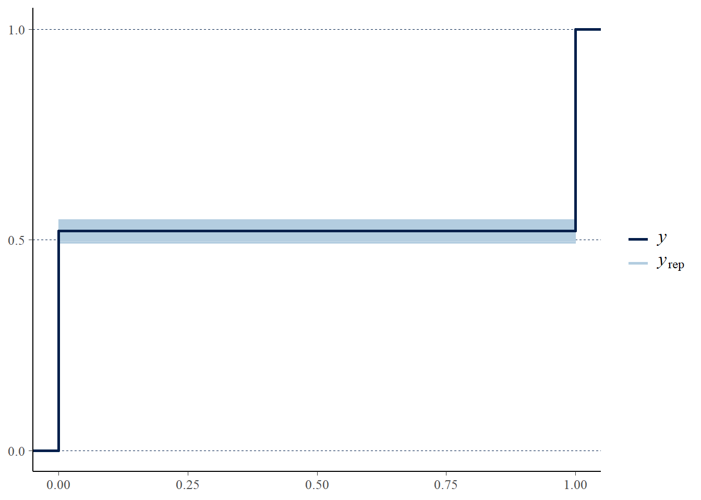
A check can be done on the bernoulli’s parameter \(\theta\), which in our model is, on average \(\text{logit}^{-1}(\alpha+x*\beta)\).
Being our observed and replicated data just vectors of 0s and 1s, the parameter in an observed or replicated array is the mean of the values of such array.
ppc_stat(y,y_rep)## `stat_bin()` using `bins = 30`. Pick better value with `binwidth`.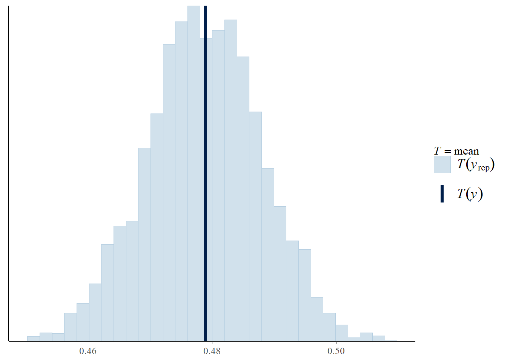
The fit is excellent also considering the parameter.
To have an estimate for residuals, I’ll fit the Brier Score to the model:
hist_fun = function(y, y_rep, fun){
vals = y_rep %>% apply(1,function(x) fun(y, x) )
print(paste0("average statistic = ",mean(vals)))
print(paste0("sd = ",sd(vals)))
return (ggplot(data = vals %>% as_tibble, aes(x=value)) +
geom_histogram(aes(y=..density..), fill = "orange") +
geom_density() +
xlab ( as.character(substitute(fun)) ) )
}
(brier_1 = hist_fun(y, y_rep, DescTools::BrierScore))## [1] "average statistic = 0.28458114992722"
## [1] "sd = 0.00726369957376172"## Warning: Calling `as_tibble()` on a vector is discouraged, because the behavior is likely to change in the future. Use `tibble::enframe(name = NULL)` instead.
## This warning is displayed once per session.## `stat_bin()` using `bins = 30`. Pick better value with `binwidth`.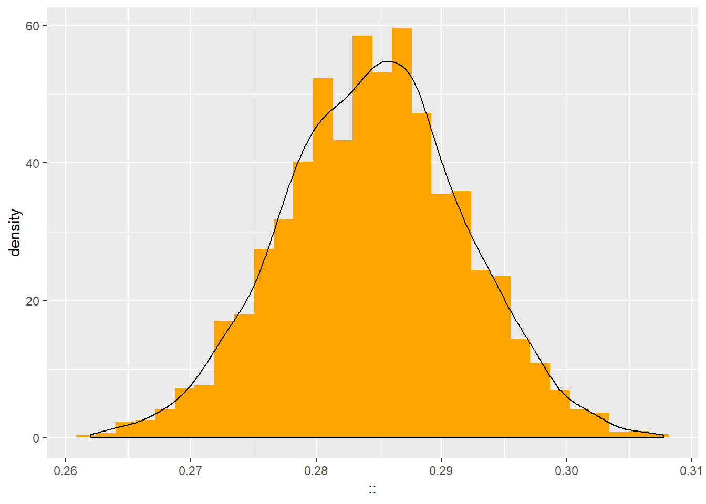
An average value of 0.28 indicates a moderate fit.
(loo_1 = loo::loo(loo::extract_log_lik(fit_lin_1)))## Warning: Relative effective sample sizes ('r_eff' argument) not specified.
## For models fit with MCMC, the reported PSIS effective sample sizes and
## MCSE estimates will be over-optimistic.##
## Computed from 4000 by 3435 log-likelihood matrix
##
## Estimate SE
## elpd_loo -1504.7 31.8
## p_loo 2.0 0.1
## looic 3009.4 63.6
## ------
## Monte Carlo SE of elpd_loo is 0.0.
##
## All Pareto k estimates are good (k < 0.5).
## See help('pareto-k-diagnostic') for details.4.2 Hierarchical models
I provide two generic stan models for the following sections:
model_lin_hier_interc = stan_model('models/stan_model_glm_2.stan', auto_write = T)
model_lin_hier_both = stan_model('models/stan_model_glm_3.stan', auto_write = T)
model_lin_hier_interc_s = stan_model("models/stan_model_glm_2_pri_strong.stan")4.2.2 Hierarchy over primary school
4.2.2.1 Model with variable intercept, fixed slope
Having seen that the previous hierarchy did not offer much contribution to the model, I decided to change the hierarchical structure, focusing on the primary school of origin.
This model will begin in trying to answer to the request nr. 3:
Draw inference on school random effects. Does the primary school matter?The model will be a hierarchical bayesian logistic regression with a random effect for the primary school:
fit_lin_hier_pri_interc = sampling(model_lin_hier_interc,
data = list(N = data %>% nrow,
x = data$verbal,
y = y,
G = data$primary%>%levels%>%length,
group_mapping = data %>% pull(primary) %>%
as.numeric),
cores = 4)
saveRDS(fit_lin_hier_pri_interc, "models/fit_lin_2.rds")Let’s analyze the posterior in an automated fashion:
fit_lin_sum = summary(fit_lin_hier_pri_interc)
fit_lin_sum = fit_lin_sum$summary %>%
as_tibble %>%
tibble::add_column(param = fit_lin_sum$summary %>% row.names) %>% select(param, everything())\(\beta\)
fit_lin_sum %>% filter(param == 'beta')## # A tibble: 1 x 11 ## param mean se_mean sd `2.5%` `25%` `50%` `75%` `97.5%` n_eff Rhat ## <chr> <dbl> <dbl> <dbl> <dbl> <dbl> <dbl> <dbl> <dbl> <dbl> <dbl> ## 1 beta 0.183 8.75e-5 0.00634 0.171 0.179 0.183 0.187 0.195 5250. 0.999The mean is very close to the non-hierarchical model (\(\Delta \pm 0.02\)), and 0 is well outside the 95% CI.
Intercepts
Instead of printing directly the intercepts’ posteriors, I’ll store them in a data frame and make considerations on the 95% CI via
dplyr.First, I create the dataframe and add a new variable telling me whether 0 is or is not within the 95% CI of each parameter:
fit_lin_sum_alphas = fit_lin_sum %>% filter(grepl('alpha',param)) %>% mutate(sign = ifelse(`97.5%`*`2.5%`<0, "NoSign", "Sign"))Then, I group by the new variable to see how many school have a significative \(\alpha\) parameter:
fit_lin_sum_alphas %>% select(sign) %>% group_by(sign) %>% summarise(n=n())## # A tibble: 2 x 2 ## sign n ## <chr> <int> ## 1 NoSign 123 ## 2 Sign 25Out of 148 primary schools, only 25 schools show to have somewhat an effect on the score.
These are such schools:
fit_lin_sum_alphas %>% filter(sign == 'Sign')## # A tibble: 25 x 12 ## param mean se_mean sd `2.5%` `25%` `50%` `75%` `97.5%` ## <chr> <dbl> <dbl> <dbl> <dbl> <dbl> <dbl> <dbl> <dbl> ## 1 alph~ 8.77 0.121 6.21 0.290 4.04 7.42 12.2 23.4 ## 2 alph~ 1.20 0.00485 0.353 0.528 0.951 1.20 1.44 1.88 ## 3 alph~ -0.992 0.00552 0.446 -1.85 -1.30 -0.993 -0.694 -0.105 ## 4 alph~ 0.859 0.00541 0.446 0.0198 0.554 0.846 1.16 1.74 ## 5 alph~ 1.85 0.00993 0.715 0.542 1.35 1.81 2.30 3.34 ## 6 alph~ -9.76 0.115 5.78 -23.0 -13.2 -8.54 -5.36 -1.93 ## 7 alph~ 10.1 0.137 6.00 1.97 5.53 8.77 13.3 24.8 ## 8 alph~ 1.12 0.00511 0.382 0.396 0.872 1.12 1.37 1.87 ## 9 alph~ 1.29 0.00576 0.452 0.419 0.990 1.29 1.59 2.17 ## 10 alph~ 1.11 0.00436 0.337 0.470 0.886 1.11 1.34 1.80 ## # ... with 15 more rows, and 3 more variables: n_eff <dbl>, Rhat <dbl>, ## # sign <chr>mcmc_intervals(as.array(fit_lin_hier_pri_interc), pars = fit_lin_sum_alphas %>% filter(sign == 'Sign') %>% pull(param))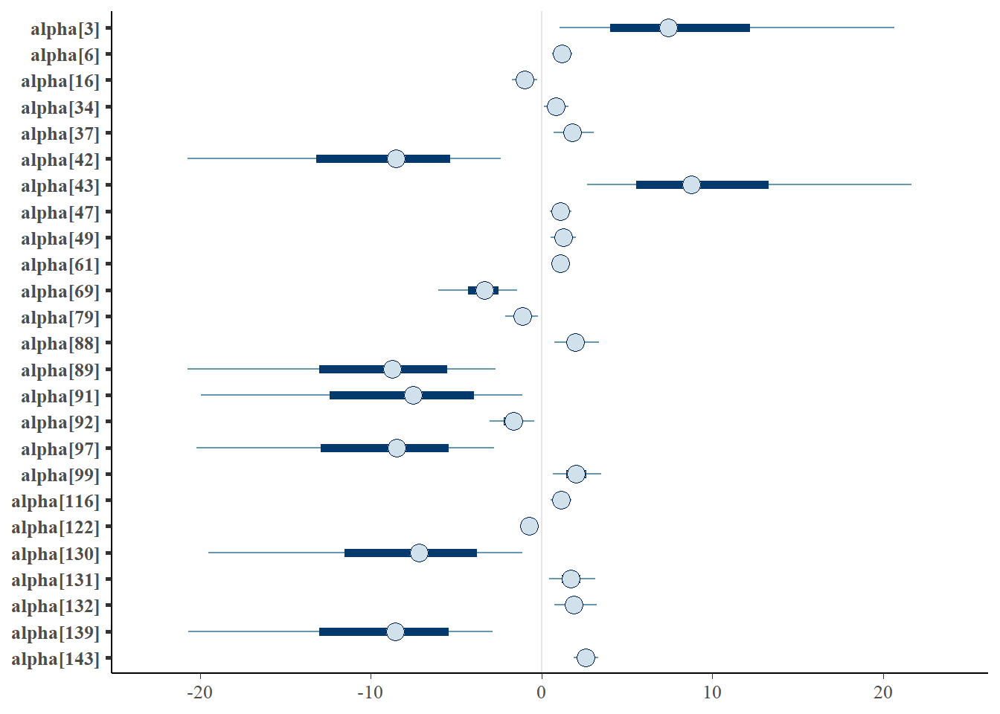
Analysis on some schools:
data %>% filter(primary %in% c(3, 139, 69, 49)) %>%
group_by(primary, attain01) %>% summarise(n=n())## # A tibble: 6 x 3
## # Groups: primary [4]
## primary attain01 n
## <fct> <fct> <int>
## 1 3 1 3
## 2 49 0 14
## 3 49 1 17
## 4 69 0 7
## 5 69 1 1
## 6 139 0 19The Brier score:
hist_fun(data$attain01%>%as.character%>%as.numeric,
as.matrix(fit_lin_hier_pri_interc, pars = "y_rep"),
DescTools::BrierScore)## [1] "average statistic = 0.254278748180495"
## [1] "sd = 0.00663399163972432"## `stat_bin()` using `bins = 30`. Pick better value with `binwidth`.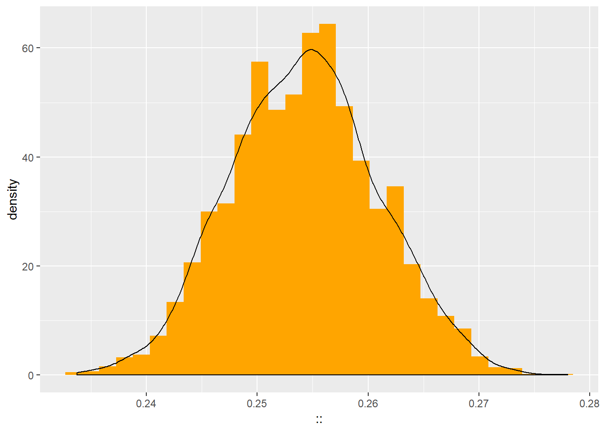
The model improves the Brier Score (ca 0.25 vs 0.28 for the non-hierarchical model): however, we can see that this improvement seems significative:
## `stat_bin()` using `bins = 30`. Pick better value with `binwidth`.
## `stat_bin()` using `bins = 30`. Pick better value with `binwidth`.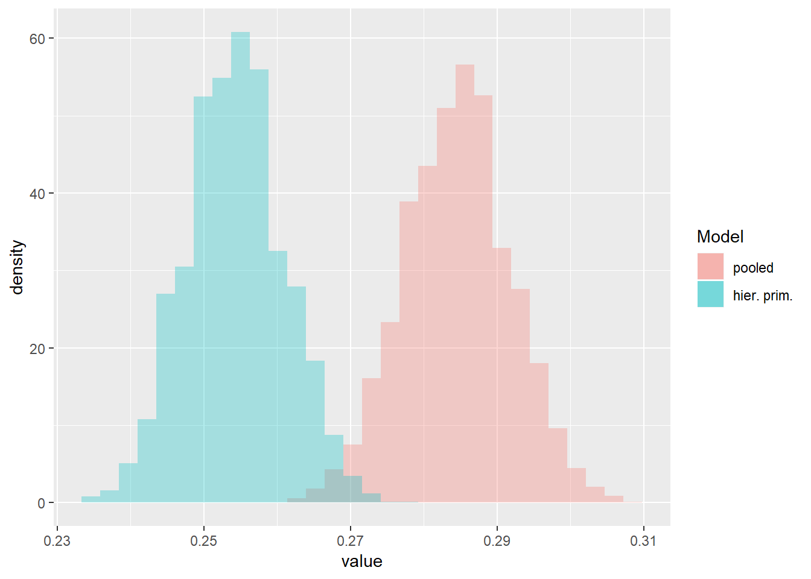
This is not though confirmed by the LOOIC:
(loo_pri=loo::loo(loo::extract_log_lik(fit_lin_hier_pri_interc)))## Warning: Relative effective sample sizes ('r_eff' argument) not specified.
## For models fit with MCMC, the reported PSIS effective sample sizes and
## MCSE estimates will be over-optimistic.## Warning: Some Pareto k diagnostic values are too high. See help('pareto-k-diagnostic') for details.##
## Computed from 4000 by 3435 log-likelihood matrix
##
## Estimate SE
## elpd_loo -1511.9 36.2
## p_loo 154.9 6.6
## looic 3023.9 72.3
## ------
## Monte Carlo SE of elpd_loo is NA.
##
## Pareto k diagnostic values:
## Count Pct. Min. n_eff
## (-Inf, 0.5] (good) 3371 98.1% 812
## (0.5, 0.7] (ok) 44 1.3% 362
## (0.7, 1] (bad) 12 0.3% 52
## (1, Inf) (very bad) 8 0.2% 28
## See help('pareto-k-diagnostic') for details.loo_soc##
## Computed from 4000 by 3435 log-likelihood matrix
##
## Estimate SE
## elpd_loo -1469.8 32.0
## p_loo 3.9 0.2
## looic 2939.6 63.9
## ------
## Monte Carlo SE of elpd_loo is 0.0.
##
## All Pareto k estimates are good (k < 0.5).
## See help('pareto-k-diagnostic') for details.loo_1##
## Computed from 4000 by 3435 log-likelihood matrix
##
## Estimate SE
## elpd_loo -1504.7 31.8
## p_loo 2.0 0.1
## looic 3009.4 63.6
## ------
## Monte Carlo SE of elpd_loo is 0.0.
##
## All Pareto k estimates are good (k < 0.5).
## See help('pareto-k-diagnostic') for details.Since the LOOIC operates on the predictive level, it’s possible that a model showing increased goodness of fit but decreased LOOIC may be overfitting the data.
4.2.2.2 Stronger priors
Fit a new model with stronger priors:
\[ \alpha \sim N(0.2,1) \\ \beta \sim N(0,1) \]
fit_lin_hier_pri_interc_s = sampling(model_lin_hier_interc_s,
data = list(N = data %>% nrow,
x = data$verbal,
y = y,
G = data$primary%>%levels%>%length,
group_mapping = data %>% pull(primary) %>%
as.numeric),
cores = 4)
saveRDS(fit_lin_hier_pri_interc_s, "models/fit_lin_2s.rds")Analysis on \(\alpha\)s:
fit_lin_sum = summary(fit_lin_hier_pri_interc_s) fit_lin_sum = fit_lin_sum$summary %>% as_tibble %>% tibble::add_column(param = fit_lin_sum$summary %>% row.names) %>% select(param, everything())fit_lin_sum = fit_lin_sum %>% mutate(sig = ifelse(`2.5%`*`97.5%`<=0,0,1)) print(fit_lin_sum %>% filter(grepl("alpha",param), sig==0) %>% count)## # A tibble: 1 x 1 ## n ## <int> ## 1 135print(fit_lin_sum %>% filter(grepl("alpha",param), sig==1) %>% count)## # A tibble: 1 x 1 ## n ## <int> ## 1 13mcmc_intervals(as.array(fit_lin_hier_pri_interc_s), pars = fit_lin_sum %>% filter(sig == 1, grepl("alpha",param)) %>% pull(param))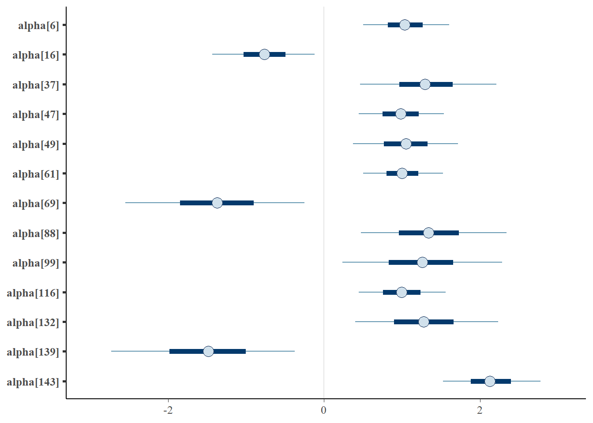
loo_pri_s = loo::loo(loo::extract_log_lik(fit_lin_hier_pri_interc_s))## Warning: Relative effective sample sizes ('r_eff' argument) not specified.
## For models fit with MCMC, the reported PSIS effective sample sizes and
## MCSE estimates will be over-optimistic.print(loo_pri)##
## Computed from 4000 by 3435 log-likelihood matrix
##
## Estimate SE
## elpd_loo -1511.9 36.2
## p_loo 154.9 6.6
## looic 3023.9 72.3
## ------
## Monte Carlo SE of elpd_loo is NA.
##
## Pareto k diagnostic values:
## Count Pct. Min. n_eff
## (-Inf, 0.5] (good) 3371 98.1% 812
## (0.5, 0.7] (ok) 44 1.3% 362
## (0.7, 1] (bad) 12 0.3% 52
## (1, Inf) (very bad) 8 0.2% 28
## See help('pareto-k-diagnostic') for details.print(loo_1)##
## Computed from 4000 by 3435 log-likelihood matrix
##
## Estimate SE
## elpd_loo -1504.7 31.8
## p_loo 2.0 0.1
## looic 3009.4 63.6
## ------
## Monte Carlo SE of elpd_loo is 0.0.
##
## All Pareto k estimates are good (k < 0.5).
## See help('pareto-k-diagnostic') for details.print(loo_soc)##
## Computed from 4000 by 3435 log-likelihood matrix
##
## Estimate SE
## elpd_loo -1469.8 32.0
## p_loo 3.9 0.2
## looic 2939.6 63.9
## ------
## Monte Carlo SE of elpd_loo is 0.0.
##
## All Pareto k estimates are good (k < 0.5).
## See help('pareto-k-diagnostic') for details.4.2.2.3 Model with variable intercept over primary schools grouped together in clusters
This model is done merely for showing how, by reducing the number of parameters, we can reduce overfitting in the model:
data = data %>% mutate(school_clu =
ifelse(primary %in% c(16,69,139), 1,
ifelse(primary %in% c(6,37,47,49,61,88,99,116,132,143), 2,
3)))
data$school_clu = data$school_clu %>% as.factorfit_lin_hier_clu_interc = sampling(model_lin_hier_interc_s,
data = list(N = data %>% nrow,
x = data$verbal,
y = y,
G = data$school_clu%>%levels%>%length,
group_mapping = data %>% pull(school_clu) %>%
as.numeric),
cores = 4)
saveRDS(fit_lin_hier_clu_interc, "models/fit_lin_clu.rds")Let’s draw the posteriors’ graph like before:
mcmc_intervals(fit_lin_hier_clu_interc %>% as.array, pars =
dimnames(fit_lin_hier_clu_interc)$parameters %>%
as_tibble %>%
filter(grepl("alpha|beta",value)) %>% pull)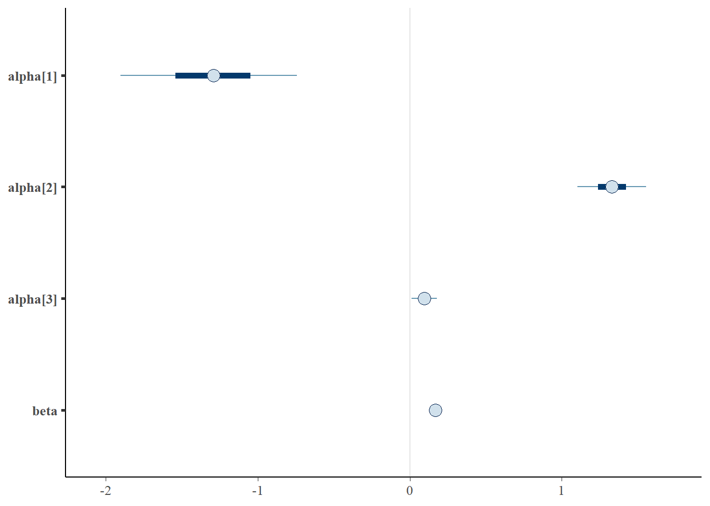
The previously defined clusters behave as expected:
- the first group has a large positive coefficient with large variance
- the second group has a large negative coefficient with large variance
- the fifth group has a positive coefficient with mean very close to 0 (0.14), although 0 is not within the 95% CI (which starts at 0.04)
Moreover, \(\beta\) has a value which is very close to that obtained in all of the previous models.
ppc_stat_grouped(y, yrep = as.matrix(fit_lin_hier_clu_interc, pars = "y_rep"), group = data$school_clu )## `stat_bin()` using `bins = 30`. Pick better value with `binwidth`.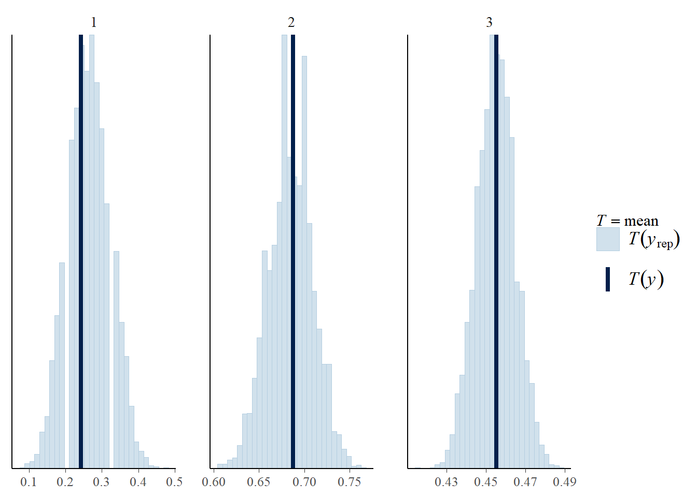
hist_fun(data$attain01%>%as.character%>%as.numeric,
as.matrix(fit_lin_hier_clu_interc, pars = "y_rep"),
DescTools::BrierScore)## [1] "average statistic = 0.274668413391558"
## [1] "sd = 0.00709323331014975"## `stat_bin()` using `bins = 30`. Pick better value with `binwidth`.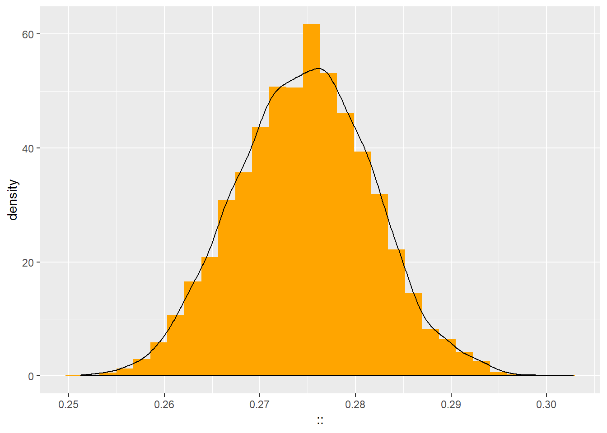
This model shows a worse fit than the previous, but that might be attributed to the previous one overfitting the data.
loo::compare(
loo::loo(loo::extract_log_lik(fit_lin_hier_pri_interc)),
loo::loo(loo::extract_log_lik(fit_lin_hier_clu_interc))
)## Warning: Relative effective sample sizes ('r_eff' argument) not specified.
## For models fit with MCMC, the reported PSIS effective sample sizes and
## MCSE estimates will be over-optimistic.## Warning: Some Pareto k diagnostic values are too high. See help('pareto-k-diagnostic') for details.## Warning: Relative effective sample sizes ('r_eff' argument) not specified.
## For models fit with MCMC, the reported PSIS effective sample sizes and
## MCSE estimates will be over-optimistic.## elpd_diff se
## 54.3 15.2The LOOIC large positive difference tells us that this model with clustered schools has a larger predictive power than the previous one.
4.2.3 Hierarchy over secondary school
As a final model class, I’ll try to fit a model with hierarchy over the secondary school instead of the primary. My goal is to check whether we can use the primary school provenance or the secondary school belonging to predict better whether the test will be passed or not.
fit_lin_hier_sec_interc = sampling(model_lin_hier_interc,
data = list(N = data %>% nrow,
x = data$verbal,
y = y,
G = data$second%>%levels%>%length,
group_mapping = data %>% pull(second) %>%
as.numeric),
cores = 4)
saveRDS(fit_lin_hier_sec_interc, "models/fit_lin_sec.rds")mcmc_intervals(fit_lin_hier_sec_interc %>% as.array, pars =
dimnames(fit_lin_hier_sec_interc)$parameters %>%
as_tibble %>%
filter(grepl("alpha|beta",value)) %>% pull)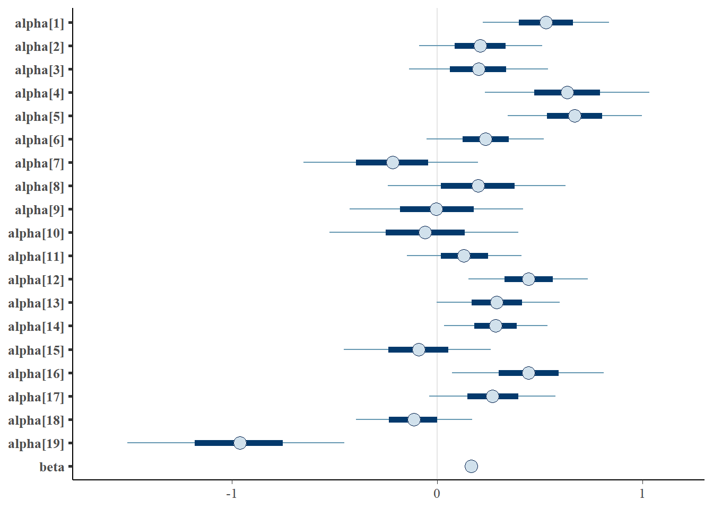
loo_sec = loo::loo(loo::extract_log_lik(fit_lin_hier_sec_interc))## Warning: Relative effective sample sizes ('r_eff' argument) not specified.
## For models fit with MCMC, the reported PSIS effective sample sizes and
## MCSE estimates will be over-optimistic.print(loo_sec)##
## Computed from 4000 by 3435 log-likelihood matrix
##
## Estimate SE
## elpd_loo -1502.6 32.3
## p_loo 20.5 0.6
## looic 3005.1 64.6
## ------
## Monte Carlo SE of elpd_loo is 0.1.
##
## All Pareto k estimates are good (k < 0.5).
## See help('pareto-k-diagnostic') for details.print(loo_1)##
## Computed from 4000 by 3435 log-likelihood matrix
##
## Estimate SE
## elpd_loo -1504.7 31.8
## p_loo 2.0 0.1
## looic 3009.4 63.6
## ------
## Monte Carlo SE of elpd_loo is 0.0.
##
## All Pareto k estimates are good (k < 0.5).
## See help('pareto-k-diagnostic') for details.print(loo_soc)##
## Computed from 4000 by 3435 log-likelihood matrix
##
## Estimate SE
## elpd_loo -1469.8 32.0
## p_loo 3.9 0.2
## looic 2939.6 63.9
## ------
## Monte Carlo SE of elpd_loo is 0.0.
##
## All Pareto k estimates are good (k < 0.5).
## See help('pareto-k-diagnostic') for details.